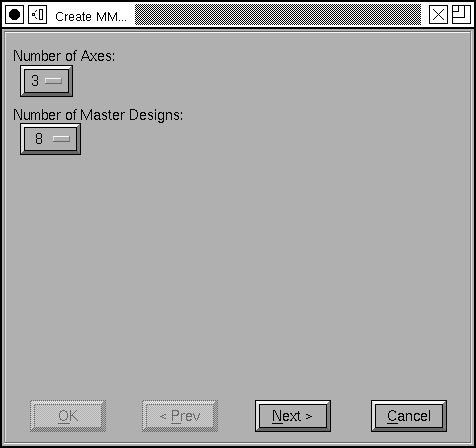
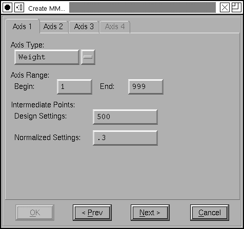
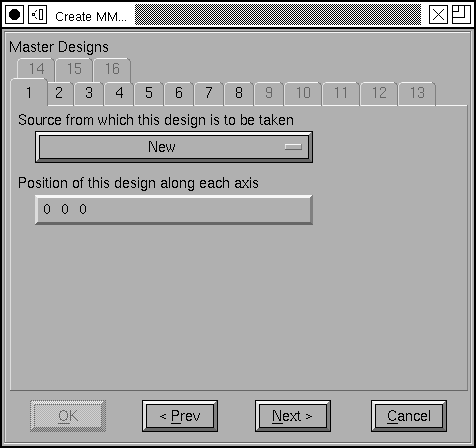
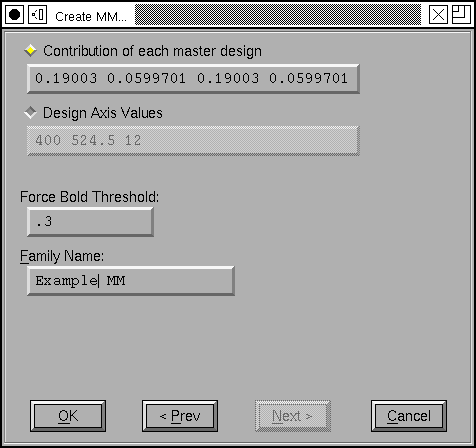
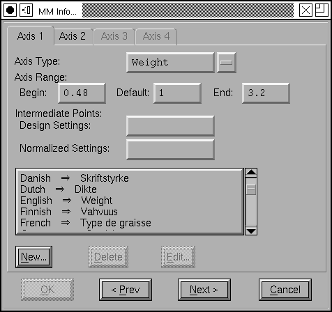
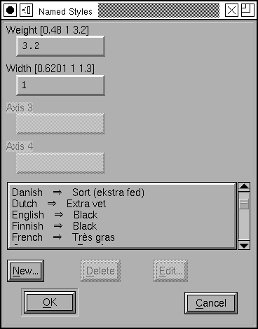
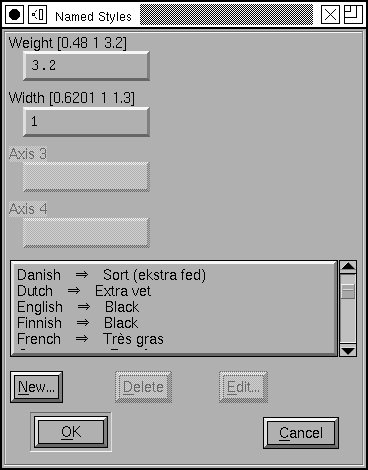

Multiple Master Dialog
Allows you to create or modify a multiple master font
What is a multiple master font?
A multiple master font is a (PostScript Type1) font which contains, in one font description several extreme styles of a font family and code for interpolating between them to produce intermediate designs. Apple has a similar concept for TrueType -- The only name I've seen given to this is "Apple Distortable Font" -- I call both multiple master.
A multiple master font has several axes along which variation may occur. For example a font might allow variation along the Weight axis (everything from Thin to Black), along the Width axis (Condensed to Extended) and along the Optical Size axis (from 6pt to 72pt). The Type1 spec requires that there be a design for every extreme combination along each axis. In the above example there should be:
- Thin Condensed 6pt
- Thin Condensed 72pt
- Thin Extended 6pt
- Thin Extended 72pt
- Black Condensed 6pt
- Black Condensed 72pt
- Black Extended 6pt
- Black Extended 72pt
A font designer may also add intermediate designs as well.
From these extreme designs PostScript is able to interpolate any intermediate style desired (as Normal Normal 12pt).
Apple has a slightly different format, not only must the extreme designs be specified but the default designs must be as well (so Apple requires 3 designs per axis as opposed to 2 for PostScript). In the above example there would be 27 designs:
- Thin Condensed 6pt
- Thin Condensed 12pt
- Thin Condensed 72pt
- Thin 6pt
- Thin 12pt
- Thin 72pt
- Thin Extended 6pt
- Thin Extended 12pt
- Thin Extended 72pt
- Regular Condensed 6pt
- ...
- Black Extended 72pt
Apple also allows for intermediate designs, but FontForge does not currently support this.
A font designer first determines how many axes s/he will need. PostScript allows a maximum of 4 axes in a Type1 font. FontForge only supports 4 axes for Apple's fonts too.
Then s/he provides information about each axis, specifically:
- The axis type (Weight, Width, Optical Size, etc)
-
The range of design values over which this axis will vary
Typically 1-999 for Weight and Width (1 being extremely thin or condensed, 999 being extremely black or extended) or 6-72 for Optical Size
Apple fonts seem to have a different default range, .05-2.0 -
A mapping from the design value range to the range [0 1] called the normalized
range. (Apple maps to [-1,1] with the default design mapped to 0)
This mapping is piecewise linear. Generally it will just be the obvious (1=>0.0, 999=>1.0) but it is possible to add intermediate points so that 500=>.3 which would give a different scaling between 1&500 than between 500&999. - In an apple distortable font, each axis must be given a name which may be translated into multiple languages.
Then s/he determines the number of designs needed. In a Type1 font there may be at most 16, and at least 2^axis-count. So in a 3 axis font there must be at least 8 designs, one for each extreme.
For Type1 fonts s/he needs to write two postscript functions
- NormalizeDesignVector
- FontForge is always able to generate this function for the user (unless the user wants something non-linear). This maps a vector of design values to their normalized values (in our three axis case above it might map [400 500 12] to [.4 .5 .09])
- ConvertDesignVector
- In the usual cases FontForge is able to create this function for the user (but in more complicated cases, with intermediate designs it is unable to do so). This function takes a normalized vector (as produced above) and figures out how much each weight to give each design in the final blend.
Finally s/he provides a default vector of design weights (one for each design). This will be used when the multiple master font is used without any additional information being provided. It should describe the normal variant of the font. The sum of all the weights must be 1.0. In the above example, if we take [400 500 12] as our definition of "normal" this vector might look like: [.273 .027 .273 .027 .182 .018 .182 .018].
Apple distortable fonts do not need the postscript functions, nor the default weight vector mentioned above. Instead they need a set of named styles which map a particular coordinate in design space to a name (which may be provided in several languages).
Corresponding glyphs in each design must have certain similarities:
- There must be the same number of contours (or references)
- There must be the same number of points on each contour
- Corresponding contours must be oriented in the same direction
- In a Type1 fonts there must be corresponding hints, and hint substitution points.
- In a TrueType font corresponding glyphs share the same instructions (and 'fpgm' and 'prep' tables), but may have different 'cvt ' tables.
The Dialog
This dialog is used for creating and modifying multiple master fonts. It contains several sub-dialogs which must be processed in sequence, and follows pretty closely to the process described above. I will first show the sequence for Adobe's fonts, and then explain Apple's fonts.
The first
screen allows you to choose the type of distortable font you wish to generate
(Adobe Multiple Master, or Apple), the number of axes in your font, and the
number of master designs, and a family name (which will be used for creating
new fonts, if you need any new ones).
The second screen
gives you control of each axis. There are a few standard axis types defined
by Adobe (and by Apple), but you could define your own. Note that there are
fields which are disabled here, they only apply to Apple's fonts.
Then you must assign a font to each of the master designs. You can either have FontForge create a new font for you (as here), or use an already loaded font, or browse your disk for a font (don't try to use the same font twice).
You must also specify the coordinates of this design along the axes. If you
use the minimum number of designs they will all be extremes and the coordinate
values will be either 0 or 1. Unless you are working with intermediate designs
it is best to let FontForge initialize this field for you.
 This screen
shows the postscript functions needed to map a design vector to a weight
vector (ie. given positions on each of the design axes, these produce blending
coefficients for each master design). In most useful case FontForge is able
to generate these functions automatically, but if you use intermediate designs
things get too complicated for FontForge and you must enter the functions
manually.
This screen
shows the postscript functions needed to map a design vector to a weight
vector (ie. given positions on each of the design axes, these produce blending
coefficients for each master design). In most useful case FontForge is able
to generate these functions automatically, but if you use intermediate designs
things get too complicated for FontForge and you must enter the functions
manually.
The last screen
shows the default weights (which you may either enter directly or as coordinates
along the design axes), the ForceBoldThreshold private dictionary
entry).
An Apple distortable font.
The dialog
looks very similar, but there are a few differences. In the Axis pane of
the dlg, you must also specify a default value for the axis, and a translatable
name.
 Apple
allows coordinates in design space to be named. Here the name "Black" is
given to the location where Weight=3.2 (the darkest value) and
Width=1
(the default value). Again these names can be translated into multiple
languages.
Apple
allows coordinates in design space to be named. Here the name "Black" is
given to the location where Weight=3.2 (the darkest value) and
Width=1
(the default value). Again these names can be translated into multiple
languages.
A suggestion
Adobe's Type1 fonts require all the extreme designs to be specified, so that for a 3 axis multiple master font, you need 8 designs. This is because Adobe only seems to expect interpolation to be used. On the other hand in many cases extrapolation can be used to generate some of these designs. In the 3 axis case you only need to produces 4 designs (one for the base, and one each to express the variation on each axis).
I will describe the 2 axis case in detail (because it is easier to visualize): Suppose you have a font which varies on the Weight axis from 50 to 900, and on the Width axis from 100 to 1000. And suppose you have created fonts for Weight=50,Width=100 & Weight=50, Width=100 & Weight=900,Width=100. Call these designs 0, 1 and 2. We wish to produce a design, 3, with Weight=900, Width=1000.

First we must produce an intermediate design (which we will delete later), call it "I". Use FontForge's Element->Interpolate Fonts command to produce a design which is 50% of the way from design 1 to design 2 (This will be Weight=475, Width=550). Then produce another design with is 200% of the way from design 0 to design "I". This will be the desired extreme design.
Adobe's Type2 designs appear to have been prepared to allow this approach, but the multiple master operators were dropped from the Type2 spec, and the question is moot.